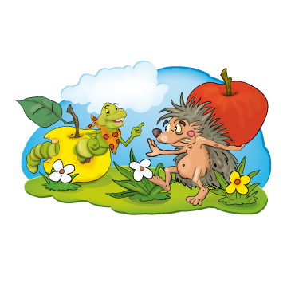

6
. Figyeld meg a képet, majd olvasd el a mondatokat! Kattints a zöld gombra, ha igaz, a piros gombra, ha nem igaz a kijelentés!

Hamis
Igaz
A süni almát cipelt.
A kukac kinevette.
A süni éppen málnát evett.
Nem volt fent a Nap.
A kukac lakásának van levele.
Kilenc tulipán is van a képen.